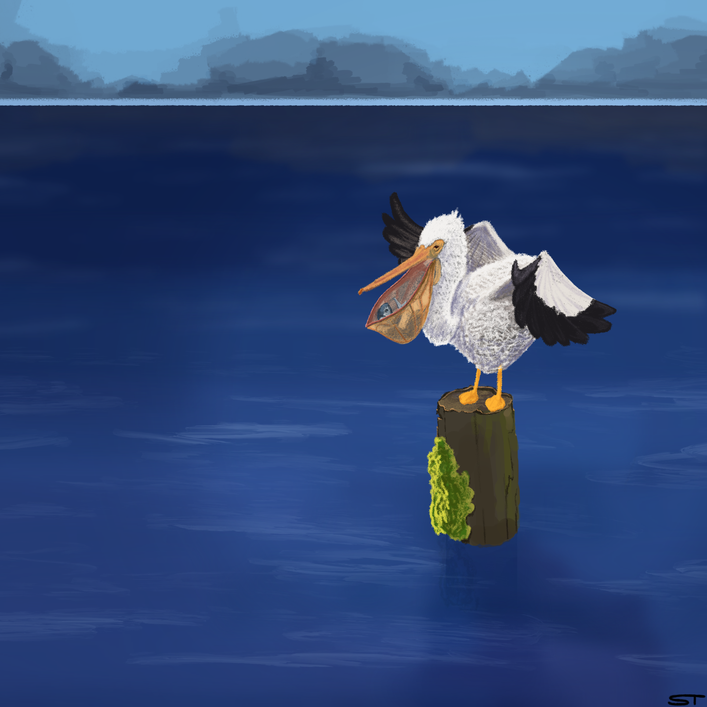
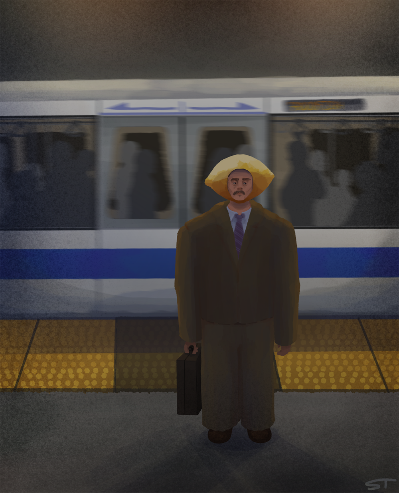

Great White Pelican Series (2026)
Untitled (1, 2, 3)
2048 x 2048px
This is a series on the bird, the Great White Pelican. It includes 3 different artworks with a Great White Pelican as the focus. For Untitled 1 and Untitled 2 I did find some non-copyright images to take reference from when sketching out the poses and the anatomy of the bird. There is a sequence of events throughout the series where the pelican is calm, it dives into the water, and it has caught a fish. This series is meant to highlight some of the beauty found in a common species, giving a rather “basic” looking bird some love, because every bird is someone’s favorite. All three pieces were done in Procreate.

Lemon (2026)
2048 x 2529px
This piece was inspired by my artist statement. It holds a lot of inspiration in the idea of surreal aspects showing emotions. The business man is coming home from a long day at work. He feels foolish, embarassed or ashamed. He feels like a lemon.
Artist Statement
I use art to explore self expression and identity, as well as a way to materialize and take a chance on the different random ideas that I come up with. I want my art to speak to the audience, to inspire, and to remind people that you can use the freedom of creativity to create quite literally, anything you can come up with.
One of the main things I focus on while working on a piece is the composition. Things like visual balance, ratios, scale and proportion are what I try to think about when photographing and designing an artwork. Working out what goes where, and how something will look in accordance with everything else is a process I try to prioritize and play with. By playing around with scale and proportion of different subject matter, I get another way of highlighting the subject, adding and subtracting visual weight and emphasizing on emotions. I explore emotion through color, form, visual metaphors and object symbolism. In my paintings and illustrations I tend to use an unsaturated and more muted color palette, while giving either the main subject or specific objects more saturation to grab focus. I also experiment in combining different styles within pieces. Especially with digital art, I enjoy playing around with the vast amount of brushes, giving different textures and styles to parts of an artwork is just another tool that helps emphasize emotion or a subject while adding to the surreal look.
I make paintings, illustrations, photography, and ceramic/clay art. I like to explore surrealism, portraiture, still-lifes as well as capturing mundane, everyday life. I use acrylic paint, pen, pencil, colored pencils, bleach, and the software Procreate.